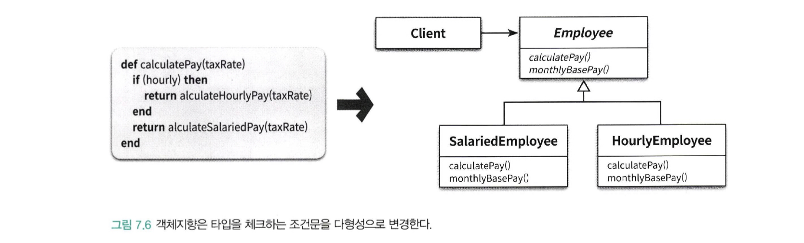

추상화와 분해
불필요한 정보를 제거하고 현재의 문제 해결에 필요한 핵심만을 남기는 작업을 추상화 라고 부른다.
가장 일반적인 추상화 방법은 한 번에 다뤄야 하는 문제의 크기를 줄이는 것이다.
이처럼 큰 문제를 해결 가능한 작은 문제로 나누는 작업을 분해(decomposition) 이라고 부른다.
분해의 목적은 큰 문제를 한번에 처리할 수 있는 규모의 문제로 나누는 것이다.
한 가지 주목할 점은 정보의 가장 작은 단위로서의 개별 항목을 의미하는 것이 아니라 하나의 단위로 취급될 수 있는 논리적인 chunk를 의미한다.
추상화와 분해는 인간이 세계를 인식하고 반응하기 위해 사용하는 가장 기본적인 사고 도구이다.
복잡성이 존재하는 곳에 추상화와 분해 역시 함께 존재한다.
소프트웨어 개발 영역에서는 복잡한 문제를 해결하기 위해 추상화와 분해를 사용한다.
프로시저 추상화와 데이터 추상화
프로그래밍 언어의 발전은 좀 더 효과적인 추상화를 이용해 복잡성을 극복하려는 개발자들의 노력에서 출발했다.
프로그래밍 언어를 통해 표현되는 추상화의 발전은 다양한 프로그래밍 패러다임의 탄생으로 이어졌다.
프로그래밍 패러다임은 프로그래밍을 구성하기 위해 사용하는 추상화의 종류와 이 추상화를 이용해 소프트웨어를 분해나는 방법의 두 가지 요소로 결정된다.
따라서 모든 프로그래밍 패러다임은 추상화와 분해의 관점에서 설명할 수 있다.
현대적인 프로그래밍 언어를 특징 짓는 중요한 두 가지 추상화 메커니즘은 프로시저 추상화와 데이터 추상화 이다.
프로시저 추상화
- 프로시저 추상화를 중심으로 시스템을 분해하는 것은 기능 분해(functional decomposition)을 통해 추상화 하는 기법이다.
- 기능 분해는 알고리즘 분해(algorithmic decomposition)이라고 부르기도 한다.
데이터 중심 추상화
데이터 중심으로 추상화 하는 방법은 타입 추상화와 프로시저 추상화 두 가지가 있다.
- 타입 추상화(type abstraction)
- 추상 데이터 타입이라 부른다.
- 프로시저 추상화(procedure abstraction)
- 객체지향이라 부른다.
- 역할과 책임을 수행하는 객체
프로시저 추상화와 기능 분해
기능은 오랜 시간 동안 시스템을 분해하기 위한 기준으로 사용됐다.
이 같은 시스템 분해 방식을 알고리즘 분해 또는 기능 분해라고 부른다.
기능 분해의 관점에서 추상화의 단위는 프로시저이며 시스템은 프로시저를 단위로 분해된다.
프로시저(procedure) 란
- 반복적으로 실행되거나 거의 유사하게 실행되는 작업들의 모임
- 로직을 재상용하고 중복을 방지할 수 있는 추상화 방법
- 내부의 상세구현을 모르더라도 외부에 공개된 인터페이스만 알면 프로시저를 사용할 수 있다.
- 프로시저는 잠재적으로 정보 은닉의 가능성을 제시
- 하지만 효과적인 정보은닉 체계를 구축하는데는 한계가 있다.
하향식 접근법(Top-Down Approach)
전통적인 분해 방법은 하향식 접근법을 따른다.
하향식 접근법이란 시스템을 구성하는 최상위 기능을 정의하고 최상위 기능을 좀 더 작은 단계의 하위 기능으로 분해해 나가는 방법
분해는 세분화된 마지막 하위 기능이 프로그래밍 언어로 구현 가능한 수준이 될 때까지 계속된다.
각 세분화 단계는 바로 위 단계보다 구체적이어야 한다. (상위 기능보다 덜 추상적이어야 한다.)
하향식 접근법의 문제점
하향식 기능 분해 방법은 겉으로는 이상적일 수 있지만, 실제로 설계에 적용하다 보면 다음과 같은 다양한 문제에 직면한다.
- 시스템은 하나의 메인 함수로 구성돼 있지 않다.
- 기능 추가나 요구사항 변경으로 인해 메인 함수를 빈번하게 수정해야 한다.
- 비지니스 로직이 사용자 인터페이스와 강하게 결합된다.
- 하향식 분해는 너무 이른 시기에 함수들의 실행 순서를 고정시키기 때문에 유연성과 재사용성이 저하된다.
- 데이터 형식이 변경될 경우 파급효과를 예측할 수 없다.
위와 같은 문제로 인해 하향식 접근법과 기능 분해가 가지는 근본적인 문제점은 변경에 취약한 설계를 낳는다는 것이다.
시스템은 하나의 메인 함수로 구성되지 않는다.
어떤 시스템도 최초에 릴리즈됐던 당시의 모습을 그대로 유지하지는 않는다.
시간이 지나고 사용자를 만족시키기 위한 새로운 요구사항을 도출해나가면서 지속적으로 새로운 기능을 추가하게 된다.
이것은 시스템이 오직 하나의 메인 함수만으로 구현된다는 개념과는 완전히 모순된다.하향식 접근법은 하나의 알고리즘을 구현하거나 배치 처리를 구현하기에는 적합하지만 현대적인 상호작용 시스템을 개발하는 데는 적합하지 않다.
기능 추가나 요구사항 변경으로 인해 메인 함수는 빈번하게 수정된다.
- 시스템 안에는 여러 개의 정상급 함수가 존재하기 때문에 결과적으로 하나의 메인 함수를 유일한 정상으로 간주하기 어렵다.
- 하향식 기능 분해의 경우에는 새로운 기능을 추가할 때마다 매번 메인 함수를 수정해야 한다.
- 기존 로직과는 아무런 상관이 없는 새로운 함수의 적절한 위치를 확보해야 하기 때문에 메인 함수의 구조를 급격하게 변경하거나 새로 짤 수 밖에 없다.
- 코드의 빈번한 수정으로 인한 버그 발생 확률이 높아지고 시스템은 변경에 취약해질 수 밖에 없다.
비지니스 로직이 사용자 인터페이스와 강하게 결합된다.
- 하향식 접근법은 비지니스 로직을 설계하는 초기 단계부터 입력 방법과 출력 양식을 함께 고민하도록 강요한다.
- 결과적으로 코드 안에서 비즈니스 로직과 사용자 인터페이스 로직이 밀접하게 결합된다.
- 사용자 인터페이스 로직과 비즈니스 로직을 한데 섞기 때문에 사용자 인터페이스를 변경하면 비즈니스 로직까지 영향을 받게 된다.
- 하향식 접근법은 기본적으로 변경에 불안정한 아키텍처 구조를 갖게 된다.
너무 이른 시기에 함수들의 실행 순서를 고정시키기 때문에 유연성과 재사용성이 저하된다.
- 하향식으로 기능을 분해하는 과정에서 함수는 더 작은 함수들로 분해되고, 분해된 함수들의 실행 순서를 결정하는 작업으로 요약된다.
- 설계를 시작하는 시점부터 시스템이 무엇을 해야하는지가 아니라 어떻게 동작해야 하는지에 집중하게 한다
- 처음부터 구현을 염두에 두기 때문에 자연스럽게 함수들의 시간적 실행 순서를 강조한다.
- 결과적으로 모든 중요한 제어 흐름의 결정이 상위 함수에서 이뤄지고 하위 함수는 상위 함수의 흐름에 따라 적절한 시점에 호출된다.
- 결과적으로 기능을 추가하서나 변경하는 작업은 기존의 함수 제어 구조를 변경하게 만든다.
- 분해된 함수를 재사용하기 어렵다.
- 재사용이라는 개념은 일반성이라는 의미를 내포한다. (상위 함수보다 일반적이다)
- 하향식 접근법에서는 하위 함수는 상위 함수에 비해 일반적일 수 없다. (재사용이 어렵다.)
데이터 형식이 변경될 경우 파급효과를 예측할 수 없다.
하향식 기능분해의 가장 큰 문제점은 어떤 데이터를 어떤 함수가 사용하고 있는지를 추적하기 어렵다.
따라서 데이터 변경으로 인해 어떤 함수가 영향을 받을지 예상하기 어렵다.
이것은 의존성과 결합도의 문제이다. 그리고 테스트의 문제이기도 하다
데이터의 변경으로 인한 영향은 데이터를 직접 참조하는 모든 함수로 퍼져나간다.
따라서 데이터 변경으로 인해 발생하는 함수에 대한 영향도를 파악하는 것은 예측할 수 없다.
데이터 변경으로 인한 영향을 최소화하려면 데이터와 함께 변경되는 부분과 그렇지 않은 부분을 명확하게 분리해야 한다.
데이터와 함께 변경되는 부분을 하나의 구현 단위로 묶고 외부에서는 퍼블릭 인터페이스를 통해 데이터에 대한 접근을 통제한다
변경에 대한 영향을 최소화하기 위해 영향을 받는 부분과 받지않는 부분을 명확하게 분리하고
잘 정의된 퍼블릭 인터페이스를 통해 변경되는 부분에 대한 접근을 통제해야 한다.
언제 하향식 분해가 유용한가?
하향식 접근법은 이미 완전히 이해된 사실을 서술하기에 적합하다
- 시스템이나 프로그램 개발자가 이미 완료한 결과에 대한 명확한 아이디어를 서술하기 위해 하향식을 사용하기 좋다.
- 작은 프로그램과 개별 알고리즘을 위해서는 하향식 접근법은 유용하다
- 프로그래밍 과정에서 이미 해결된 알고리즘을 문서화하고 서술하는 데에는 훌륭한 기법이다.
새로운 것을 개발하고 설계하고 발전하는 데는 적합하지 않다.
정보 은닉과 모듈
시스템의 변경을 관리하는 기본적인 전략은 함께 변경되는 부분을 하나의 구현단위로 묶고 퍼블릭 인터페이스를 통해서만 접근하도록 만드는 것이다.
기능을 기반으로 시스템을 분해하는 것이 아니라 변경의 방향에 맞춰 시스템을 분해하는 것이다.
정보 은닉은 시스템을 모듈 단위로 분해하기 위한 기본 원리로
시스템에서 자주 변경되는 부분을 상대적으로 덜 변경되는 안정적인 인터페이스 뒤로 감춰야 한다는 것이 핵심이다.
정보 은닉은 외부에 감춰야 하는 비밀에 따라 시스템을 분할하는 모듈 분할 원리다.
모듈은 변경될 가능성이 있는 비밀을 내부로 감추고 잘 정의되고 쉽게 변경되지 않을 퍼블릭 인터페이스를 외부에 제공해서
내부의 비밀에 함부로 접근하지 못하게 한다.
비밀을 결정하고 모듈을 분해한 후에는 기능 분해를 이용해 모듈에 필요한 퍼블릭 인터페이스를 구현할 수 있다.
시스템을 모듈 단위로 어떻게 분해할 것인가?
정답은 시스템이 감춰야하는 비밀을 찾는 것이다.
외부에서 내부의 비밀에 접근하지 못하도록 커다란 방어막을 쳐서 에워싸라.
그렇게 하면 이 방어막이 바로 퍼블릭 인터페이스가 된다.
모듈은 다음과 같은 두 가지 비밀을 감춰야 한다.
- 복잡성
- 모듈이 너무 복잡한 경우 이해하고 사용하기 어렵다.
- 외부에 모듈을 추상화할 수 있는 간단한 인터페이스를 제공해서 모듈의 복잡도를 낮춘다.
- 변경 가능성
- 변경 가능한 설계 결정이 외부에 노출될 경우 실제로 변경이 발생했을 때 파급효과가 커진다.
- 변경 발생 시 하나의 모듈만 수정하면 되도록 변경 가능한 설계 결정을 모듈 내부로 감춘다.
- 외부에는 쉽게 변경되지 않을 인터페이스를 제공한다.
시스템의 가장 일반적인 비밀은 데이터다
비밀이 반드시 데이터일 필요는 없으며 복잡한 로직이나 변경 가능성이 큰 자료 구조일 수도 있다.
그럼에도 변경 시 시스템을 굴복시키는 대부분의 경우는 데이터가 변경되는 경우다.
모듈의 장점과 한계
모듈의 장점
모듈 내부의 변수가 변경되더라도 모듈 내부에만 영향을 미친다.
- 모듈을 사용하면 모듈 내부에 정의된 변수를 직접 참조하는 코드의 위치를 모듈 내부로 제한할 수 있다.
- 어떤 데이터가 변경됐을 때 영향을 받는 함수를 찾기 위해 해당 데이터를 정의한 모듈만 검색하면 된다.
- 모듈은 데이터 변경으로 인한 파급효과를 제어할 수 있기 때문에 코드를 수정하고 디버깅하기 용이하다
비즈니스 로직과 사용자 인터페이스에 대한 관심사를 분리한다
전역 변수와 전역 함수를 제거함으로써 네임스페이스 오염(namespace pollution)을 방지한다.
- 모듈의 한 가지 용도는 네임스페이스를 제공하는 것이다.
- 변수와 함수를 모듈 내부에 포함시키기 때문에 다른 모듈에서도 동일한 이름을 사용할 수 있다.
- 모듈은 전역 네임스페이스의 오염을 방지하는 동시에 이름 충돌의 위험을 완화한다.
모듈은 기능이 아니라 변경의 정도에 따라 시스템을 분해하게 한다.
- 모듈은 외부에 감춰야 하는 비밀과 관련성 높은 데이터와 함수의 집합이다.
- 모듈에 있어 외부에 감춰야 하는 비밀은 데이터다.
- 모듈 내부는 높은 응집도를 유지한다
- 모듈과 모듈 사이에는 퍼블릭 인터페이스를 통해서만 통신한다
- 모듈과 모듈 사이에는 낮은 결합도를 유지한다.
- 모듈은 데이터와 함수가 통함된 한 차원 높은 추상화를 제공하는 설계 단위이다.
- 모듈은 외부에 감춰야 하는 비밀과 관련성 높은 데이터와 함수의 집합이다.
모듈의 단점
- 모듈이 프로시저 추상화 보다는 높은 추상화를 제공한다.
- 모듈은 인스턴스의 개념을 제공하지 않는다는 단점이 있다.
데이터 추상화와 추상 데이터 타입
추상 데이터 타입
프로그래밍 언어에서 타입(Type) 이란 변수에 저장할 수 있는 내용물의 종류와 변수에 적용될 수 있는 연산의 가짓수를 의미한다.
프로그래밍 언어는 다양한 형태의 내장 타입(built-in type)을 제공한다.
- 기능 분해 시대에 사용되던 절차형 언어들은 적은 수의 내장 타입만을 제공
- 새로운 타입을 추가하는 것이 불가능하거나 제한적이었다.
추상 데이터 타입은 프로시저 추상화 대신 데이터 추상화를 시반으로 소프트웨어를 개발하게 된 최초의 한걸음이다.
추상 데이터 타입을 구현하려면 다음과 같은 특성을 위한 프로그래밍 언어의 지원이 필요하다.
- 타입 정의를 선언할 수 있어야 한다.
- 타입의 인스턴스를 다루기 위해 사용할 수 있는 오퍼레이션의 집합을 정의할 수 있어야 한다.
- 제공된 오퍼레이션을 통해서만 조작할 수 있도록 데이터를 외부로부터 보호할 수 있어야 한다.
- 타입에 대해 여러 개의 인스턴스를 생성할 수 있어야 한다.
리스코프는 추상 데이터 타입을 정의하기 위해 제시한 언어적인 메커니즘을 오퍼레이션 클러스터(operation cluster) 라고 불렀다.
클래스는 추상 데이터 타입인가?
대부분의 프로그래밍 서적에서는 클래스를 추상 데이터 타입으로 설명한다.
그러나 명확한 의미에서 추상 데이터 타입과 클래스는 동일하지 않다.
- 클래스는 상속과 다형성을 지원하는 데 비해 추상 데이터 타입은 지원하지 못한다.
- 상속과 다형성을 지원하는 프로그래밍 기법을 객체지향 프로그래밍 (Object-Oriented Programming)이라 한다.
- 상속과 다형성을 지원하지 않는 추상 데이터 타입 기반의 프로그래밍 기법을 객체기반 프로그래밍(Object-Based Programming)이라 한다.
- 추상 데이터 타입은 Type을 추상화한 것
- 클래스는 절차를 추상화한 것
윌리엄 쿡은 하나의 대표적인 타입이 다수의 세부적인 타입을 감출 수 있기 때문에 이를 타입 추상화라 불렀다.
타입 추상화
- 개별 오퍼레이션이 모든 개념적인 타입에 대한 구현을 포괄 하도록 함으로써 하나의 물리적인 타입 안에 전체 타임을 감춘다.
- 타입 추상화는 오퍼레이션을 기준으로 타입을 통합하는 데이터 추상화 기법이다.
객체지향

- 타입을 기준으로 오퍼레이션을 묶는다.
- 두 가지 이상의 클래스로 분리할 경우 공통로직을 어디에 둘 것인지가 이슈
- 공통 로직을 제공하기 위한 간단한 방법은 공통 로직을 포함할 부모 클래스를 정의하고 상속 시킨다.
- 클라이언트는 부모 클래스 참조자에 대해 메세지를 전송하면 실제 클래스가 무엇인지에 따라 다른 메소드가 실행된다.
- 실제로 내부에서 수행되는 절차는 다르지만 클래스를 이용한 다형성은 절차에 대한 차이점을 감춘다.
- 따라서 객체지향은 절차 추상화(procedural abstraction)이다
변경을 기준으로 선택하라
단순히 클래스를 구현 단위로 사용한다는 것이 객체지향 프로그래밍을 한다는 것을 의미하지 않는다.
비록 클래스를 사용하고 있더라도 타입을 기준으로 절차를 추상화하지 않았다면 그것은 객체지향 분해가 아니다.
추상 데이터 타입 위반 사항 check list
- 클래스 내부에 인스턴스의 타입을 표현하는 변수가 있는가?
- 인스턴스 변수에 저장된 값을 기반으로 메서드 내에서 타입을 명시적으로 구분하는 방식은 객체 지향을 위반하는 것으로 간주된다.
객체 지향 위반 사항 check list

타입 변수를 이용한 조건문으로 구분하는가?
- 클라이언트가 객체의 타입을 확인하고 메서드를 호출하게 해선 안된다.
- 객체가 메세지를 처리할 적절한 메서드를 처리하게 해야한다.
OCP (Open-Closed Principle) 개방-폐쇄 원칙을 위반하는가?
- OCP란 기존 코드에 아무런 영향도 미치지 않고 새로운 객체 유형과 행위를 추가할 수 있는 객체지향의 특성이다.
- 기존코드에서 특성 변수에 대한 분기 로직이 있었다면, 새로운 요구사항이 있는 경우 코드를 수정해야 한다.
- 하지만 객체지향을 이용하면 코드 수정없이도 새로운 유형과 행위를 추가할 수 있다.
추상 데이터 타입 vs 객체지향 당신의 선택은?
- 타입 추가가 빈번한가? => 객체지향
- 추상데이터 타입의 경우 일일이 새로운 타입에 대해 체크하는 클라이언트 코드를 수정해야 한다.
- 객체지향의 경우 코드 수정없이 새로운 클래스를 상속 계층에 추가하면 된다.
- 오퍼레이션 추가가 빈번한가? => 추상 데이터 타입
- 객체지향의 경우 새로운 오퍼레이션을 추가하기 위해서는 상속 계층에 속하는 모든 클래스를 한번에 수정해야 한다.
- 추상 데이터 타입의 경우에는 전체 타입에 대한 구현 코드가 하나의 구현체에 포함되어 있다.
- 따라서 새로운 오퍼레이션을 추가하는 작업이 상대적으로 간단하다
참고
- Objects(코드로 이해하는 객체지향 설계) - chapter7. 객체 분해